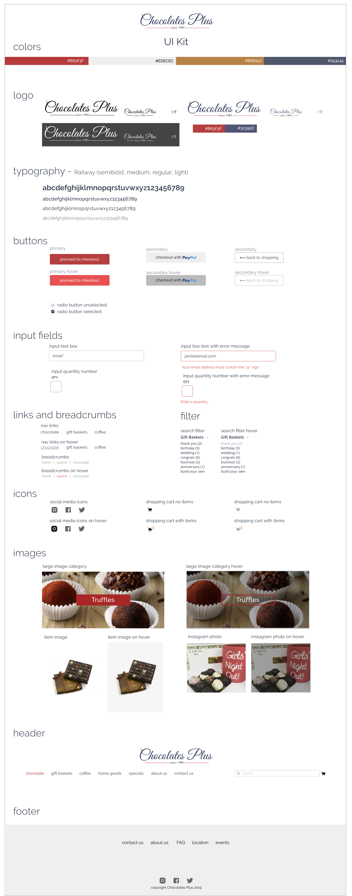

Chocolates Plus: A Sweet Treat
responsive design & branding
responsive design & branding


MY ROLE
User Research | Information Architecture | Interaction Design | Prototype and Testing | UI/Visual Design
TOOLS
Sketch | InVision | Photoshop | Zeplin
Timeline: 80 hours over 2 weeks
CHALLENGES
How might we make it easier for Chocolates Plus users to learn more about each product?
Chocolates Plus is a well-known confectionary in northern Minnesota, but website visitors can't browse or buy chocolate online. I needed to create a frictionless process to search and purchase items on an updated, responsive website.
ASSUMPTIONS
1. Users are interested in shopping for chocolate via an online website.
2. User flows found on other chocolate shop websites are similar to what users of Chocolate Plus need.
3. Users currently encounter painpoints when navigating Chocolate Plus’ website across different platforms.
SOLUTION
Through the use of secondary and market research, customer interviews, IA, and usability testing, I created a responsive site redesign that allows users to easily browse and purchase their favorite chocolate online.

RESEARCH
What are users needs and pain points related to purchasing chocolate?
Currently, chocolate sales account for over 60% of sales in the candy industry. While confectionary stores make up only 5% of sales,
they are typically the purveyors of higher quality, niche products – which have been increasing
in popularity as well. Adults 45 and older have higher per capita consumption and trended up during the past five years.
competitive analysis
I conducted market research and a competitive analysis to learn more about the market and potential.

What does a potential user look like?
Adults 45 and older have higher per capita consumption and trended up during the past five years, while younger adults, in the 18 to 44 age range,
have declined consumption in the same period, presenting an opportunity for growth.
provisional personas
Based on my research about chocolate demographic trends, I created some provisional personas to give a general overview of who I should be interviewing.
Opportunities for Growth
Sales have seen a surge in dark chocolate (+32 percent) and chocolate-covered fruit (+322 percent),
reminding manufacturers that online shoppers are open to trying new products and new experiences
While online candy sales continue to grow, a majority of ecommerce shoppers (85 percent) have yet to make candy purchases.
That means there's room for even more growth, and it is argued that the migration of consumers to online channels will continue to spur greater growth of eCommerce candy sales.
User Interviews
To better understand the shopping experience from the user’s point of view, five interviews were conducted
in person with visitors to Chocolates Plus. Rapport was build with each participant and an
interview script was used for consistency.

RESEARCH SYNTHESIS
What do users need?
After the user interviews were finished, I sorted my notes using an empathy map to clarify exactly what
users were saying, thinking, feeling, and doing during their shopping experiences. I looked for patterns
and noticed that a few key ideas emerged from the majority of the interviews:
empathy map

User Persona
Using the insights and patterns collected from the empathy map, I created a user persona to understand
the major needs, goals, pain points, and motivations of the majority of users.
DEFINE & IDEATE
Now that I had discovered more about the user from research, it was time to begin brainstorming possible solutions. To help bridge the gap between stating the problems and identifying solutions, I created POV statements and HMW questions using the persona's needs, goals, and motivations. POVs and HMWs are useful tools to spark thinking on a broader scale about how to address the user's challenges.
POV and HMW statements
STRATEGY
I wanted to make sure that I address the shared goals of the users and the business. The also thought about technical constraints of the project such as making the site responsive and protecting users data during the purchase process.
I also created a project roadmap using the pov's and input from the brainstorming sessions to prioritize possible design solutions and metrics for measuring feature effectiveness.
Product Roadmap
INFORMATION ARCHITECTURE
site map
The original webpage did not have any search or filture options on the site. I create an information architecture structure with hiearchy based on secondary research and feedback from user. I thought about how each page would interconnect on the site and create an effective flow for the user.
INTERACTION DESIGN
After creating the sitemap, I used a task flow and user flow to visualize the main steps and thought proccess of a user as they accomplish a task on the Chocolates Plus website.
task flow
low-fi wireframes
Now that the architecture had taken shape, I used sketching and wireframes to begin exploring how the interface would interact to create a visual focused experience for the users.
mid-fidelity wireframes
To prepare for an initial prototype, I used Sketch to created mid-fidelity wireframes of the site interaction.
INTERFACE DESIGN
Once the interaction wireframe sketches were completed, it was time to add color, typography, and interface elements that adhered to the Chocolates Plus brand and provided visual hierarchy.
mood board
I used images, colors, and words to convey the look and feel of the Chocolates Plus brand and explored the brand adjectives -inviting, quaint, colorful, unique.
style tile
The style tile give an overview of how the typography, color palette, etc. will work together and at various sizes to convey the Chocolates Plus brand.
UI kit
As the Chocolates Plus brand evolves over time, a comprehensive UI kit will allow for consistent changes to the UI patterns.

PROTOTYPE AND TESTING
Usability Testing
I conducted in-person and remote testing with four participants who fit the demographics and profile of a potential Chocolates Plus user. Each participants was given two scenarios to consider with a task to accomplish. Each participant session was recorded and lasted approximately 10-15 minutes.
(remote testing session)
affinity map
After testing the prototype with users, I created an affinity map to sort, prioritize, and rank the user testing feedback. Insights from the affinity map helped to identify areas for iteration.
Recommendations
Based on insights from the testing, top priority recommendations included the following:
1. Move "back to shopping" button to the top of the product page.
2. Make each name label a link to the product page.
3. Add the approximate quantity for all items, even those that are paid for per pound.
high-fidelity wireframe revisions and iteration
I revised the high-fidelity wireframes screen design based on recommendations from usability testing. If time allowed, I would iterate with another round of usability testing to look for further ways to improve to the user experience.

revisions and iteration
The prototype in InVision had clickable buttons and simulated page transitions and animations that roughly matched my experiential concepts of how the interaction would flow.
WHAT I LEARNED
Hindsight is 20/20...here are my takeaways from creating an updated, responsive Chocolates Plus.
Empathy is key
For this project, Not only was empathizing with users essential, but I also had to speak with
stakeholders and people outside of the design world. I had to remind myself
not to use too much jargon and keep in mind the stakeholders point of view. What are their main
goals and objectives with a UX update? How familiar are they with the terms and jargon I may user with my mentor?
How can I demonstrate the value of UX and it's benefits to their company.
Iterate Early and Often
There were moments during this project when a lot of time and energy could have been saved by collaboarating and running a quick usability test
on a project. Iterating keeps us from getting too attached to design ideas and weeds out potential issues earlier rather than later.